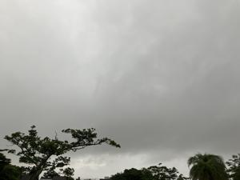
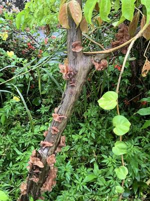
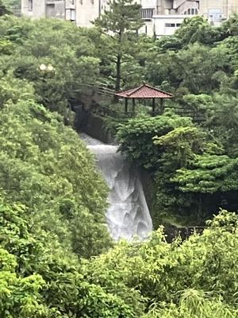

うるがいの話 ある日
最新: キクラゲ【うるがいの話 ある日】とは 一日だけのプログです
『うるがいの話』の最新一日だけのプログで、通信料が少なく経済的だ。カニの画像をクリックすると全ての日付が載る『うるがいの話』サイトを表示します
|
|
【うるがいの話】 うるがい(ｳﾙｶﾞｲ urugai)とは、『もずくがに』の名前でとても大きくなります。 |
|---|---|
|
|
【カミマヤーの話】 猫のことを方言でマヤーといいます。カミマヤー（kamimayaa）とは、神の猫のことです。 |
|
【たながぁの音楽】 たながぁ（ﾀﾅｶﾞｰ tanagaa）とは手長えびのことで、何種類かあり大きいのは車 エビぐらいになります。 |

|
【ぶながぁの話】 ぶながぁ(ﾌﾞﾅｶﾞｰ bunagaa)とは、赤い髪の毛、赤い身体、そして身長は１ｍ２０ｃｍ ぐらい、川の蟹を食べているの目撃された。場所は沖縄県国頭郡大宜味村のと ある村僕の隣近所に住んでいる爺さんから、聞いた話です。 |
|
|
【ギーマの話】 ギーマ(giima)とは、山原の里山に咲くスズランに似た、 花を付けます。実は食べられます、 気が付くと口の周りが紫になっています。 |
2025年07月27日 (日）キクラゲ
16:14

雨が降り続いたので、枯れたグァバ（バンシルー、活きていた時は
実をいただきました）にキクラゲが、大きく成長していました。私
が小学生の頃、オバーが木に付いた乾燥したキクラゲを採って、食
べていました。この後、誰か採るのだろうか興味はあります。

昨日と違い、風向きが変わったせいで朝ベランダに干した洗たく物
が、その後の大雨で濡れてしまいました。あー、失敗！、濡れた洗
濯物を脱水して、除湿器である程度湿気をとり、最後は洗濯機で乾
燥させました。一時期、晴れ続きだったのでダムの心配を少しして
いたのですが、さっき国管理９ダム合計では９７％でした。
